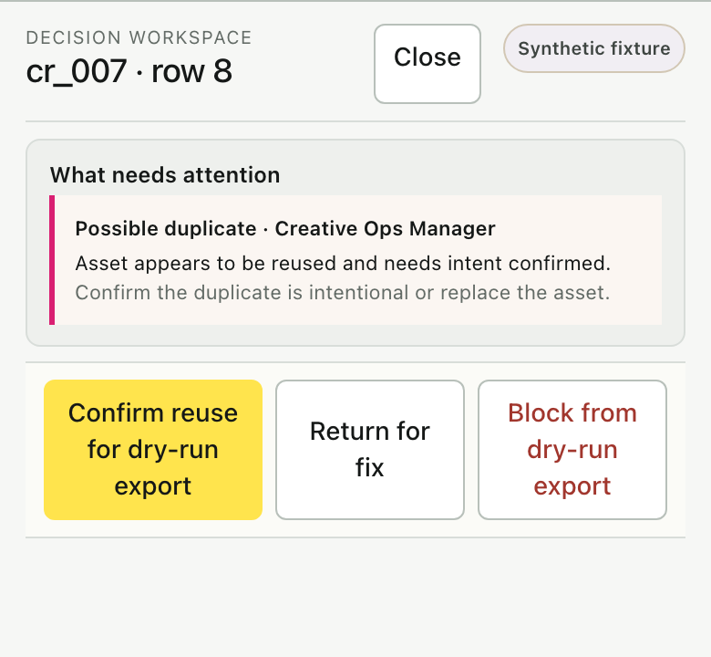

Creative Launch Workspace
Pre-launch QA for Meta creative operations
The launch control layer before Ads Manager.
Check every creative row, route each exception and keep uncertain calls human.
CHECK / ROUTE / DECIDE

Check every creative row, route each exception and keep uncertain calls human.
